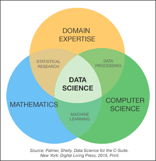
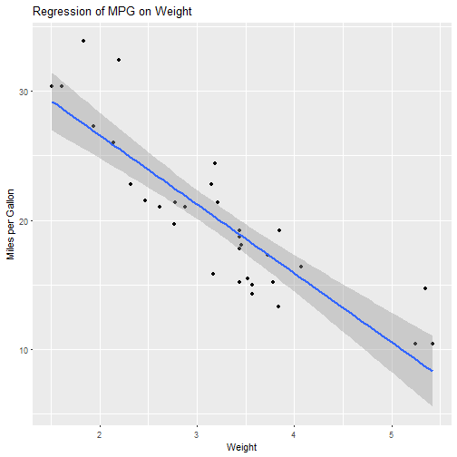
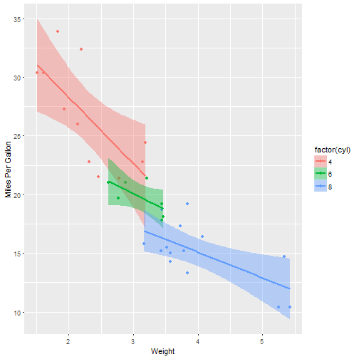

- What is Machine Learning?
- Some Examples
- Deep Learning
- Sum up/ Q&A
Introduction to Machine Learning
A few thoughts and some examples
Lars Bungum and Eivind Havikbotn
Synopsis
What is this?
sed <- function(s1, s2) {
if (nchar(s1) == 0)
return(nchar(s2))
if (nchar(s2) == 0)
return(nchar(s1))
if (substr(s1, 1, 1) == substr(s2, 1, 1)) {
sed(substr(s1, 2, nchar(s1)), substr(s2, 2, nchar(s2)))
}
else {
min(1 + sed(substr(s1, 2, nchar(s1)), s2),
1 + sed(s1, substr(s2, 2, nchar(s2))),
1 + sed(substr(s1, 2, nchar(s1)), substr(s2, 2, nchar(s2)))
)
}
}
Levenshtein Distance!

sed("lars", "lasse")
## [1] 2
sed("lars", "lauritz")
## [1] 4
Levenshtein Distance = Machine Learning
In Frameworks:
- Python: from leven import levenshtein
- R: library(stringdist)
- Java: weka
In Research

As you shout out in the forest, you are answered!



Machine Learning Enables Us To:
- Predict
- Explore
- Visualize
- Understand
with lots of data.
Data-driven approaches learn from data (bottom-up) as opposed to coming up with rules and applying them to data (top-down).
Prediction
Prediction ranges from predicting classes, binary or multiclass, i.e., "should I stay or should I go" vs. "when should I go" -- if the potential times are discrete. If they are continuous, we have a regression problem.
A lot (but not arbitrarily much!) context can be taken into account when making these predictions.
Example:
- Objective: "Predict the correct class of this document."
- Input: "Frequencies of the words used in the document."
- Output: A class (eg., food, sports, finance, etc..)
Exploration
Machine Learning can help us explore a dataset.
Iris dataset:
50 measurements of sepal length and width, and petal length and width of 50 flowers of 3 species of Iris; setosa, versicolor, and virginica.

Que?!
Explore: Scatter Plot Matrix (SPLOM)

Visualize: Dendrogram

Or Possibly This?

Understanding?
Inference can help us understand.

The Effect of Cylinders

Why Would We Want To Do This?!
McKinsey Global Institute (2011) predicted the importance of Big Data/Data Science/Machine Learning: http://www.mckinsey.com/business-functions/digital-mckinsey/our-insights/big-data-the-next-frontier-for-innovation
The McKinsey Global Institute argues that data analytics is emerging at the forefront as the competitive advantage of any business, driving productivity, growth and innovation.
A human being can not read thens of thousands of document per day, let alone per hour, minute or second. Computers can! (Or can they?!)
Digression: The Chinese Room (John Searle)

More Concretely (Finally!)
- Supervised Learning
- Unsupervised Learning
- Semi-Supervised Learning
- Active Learning
Supervised Learning
Supervision means that the algorithms are instructed. More technically, a function is inferred from labeled data.
Example:
- Objective: Determine the spamicity of emails.
- Input: A corpus of emails tagged as spam and ham.
- Output: A class {Spam, Ham}
The computerized model learns weights that are multiplied with features generated from emails to determine their status. Thus, the model can be applied to novel (new) data.
Unsupervised Learning
Algorithms are not provided a set of goals they are to reach.
An example is the hierarchical clustering shown above.
Idea: run an algorithm on data and infer relations in the data in another (lower) dimension based on shared properties. This can result, for instance, in a clustering which groups similar objects together.
Patterns can be discovered (such as topics in a document colletion) or input lower-dimensional representations of instances.
Example Algorithm
Naive Bayes Classification:
Under the assumption of conditional independence, the probability of a class \(k\) is expresed as:
\[ \begin{align} p(C_k \mid x_1, \dots, x_n) & \varpropto p(C_k, x_1, \dots, x_n) \\ & \varpropto p(C_k) \ p(x_1 \mid C_k) \ p(x_2\mid C_k) \ p(x_3\mid C_k) \ \cdots \\ & \varpropto p(C_k) \prod_{i=1}^n p(x_i \mid C_k)\,. \end{align} \] Finding the best class:
\[ \hat{y} = \underset{k \in \{1, \dots, K\}}{\operatorname{argmax}} \ p(C_k) \displaystyle\prod_{i=1}^n p(x_i \mid C_k).\]
NB Calculation
## No Color Type Origin Stolen
## [1,] "1" "Red" "Sports" "Domestic" "Yes"
## [2,] "2" "Red" "Sports" "Domestic" "No"
## [3,] "3" "Red" "Sports" "Domestic" "Yes"
## [4,] "4" "Yellow" "Sports" "Domestic" "No"
## [5,] "5" "Yellow" "Sports" "Imported" "Yes"
## [6,] "6" "Yellow" "SUV" "Imported" "No"
## [7,] "7" "Yellow" "SUV" "Imported" "Yes"
## [8,] "8" "Yellow" "SUV" "Domestic" "No"
## [9,] "9" "Red" "SUV" "Imported" "No"
## [10,] "10" "Red" "Sports" "Imported" "Yes"
\[ P(Yes|Red, Sports, Dom) = P(Yes)*P(Red|Yes)*P(Sports|Yes)*P(Dom|Yes) \\ P(No|Red, Sports, Dom) = P(No)*P(Red|No)*P(Sports|No)*P(Dom|No) \]
Semi-Supervised Learning
Example:
We have some data which is tagged (Dow Jones Newswires) but other data that is untagged (other feeds).
Tagging of the other data is then, strictly speaking, not a supervised task because we do not have any supervision on the data we are actually tagging.
A recurring problem in all data-driven approaches; train a model on some data (text about food), apply it to other data (text about finance).
Active Learning
Select some, mis-classified instances, correct them and feed them back into the loop.
This can also be referred to as reinforcement learning or on-line learning whereby the algorithm can learn from mistakes.
Has been shown to improve training time as you need less data to converge to the maximum performance.
Infront and Machine Learning
For the Company:
- Business Intelligence (predict sales, new/old? customers, synergies between countries, marketing impact, etc.)
- Support (load prediction, FAQ creation, chatbots, etc.)
- Intrusion Detection (who is knocking on our door?)
- Sentiment Analysis (how do people feel about #infront on Twitter?)
For the Customers:
- Recommendation of (products, news, stocks?!)
- Text Summarization (what's the essence of this document/document collection)
- Topic Discovery (what are people talking about?)
- Voice APIs (play text, recognize voice)
- +++
Conclusion
- Machine Learning can be pervasive through the organization
- It is a helpful tool (your friend)
- Methods, algorithms, platforms are increasingly available
- Frameworks make it easier to deploy (e.g., try many algorithms in parallel)